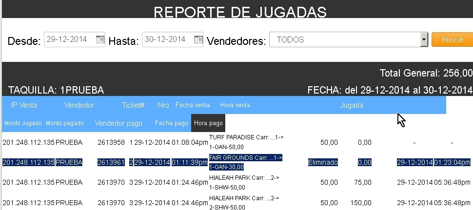

Eliminar
ticket�
Recuerde
que por d�a tendr� una cantidad de ticket limitada por eliminar y solo se
podr�n
eliminar si la partida en dicha carrera en la cual se realiz� la jugada todav�a
no se ha dado.
Despu�s introducir el c�digo del ticket
Despu�s darle aceptar con el clip izquierdo
del rat�n a eliminar ticket.
Eso es todo sale un mensaje de eliminada
confirmando que ya el ticket no
est� en el sistema puede comprobarlo en el reporte de jugadas
Aqu� en azul se puede ver el ticket con la
palabra eliminado.
